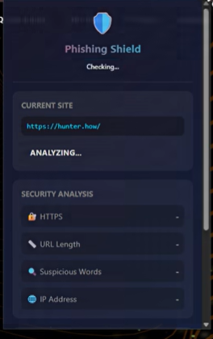
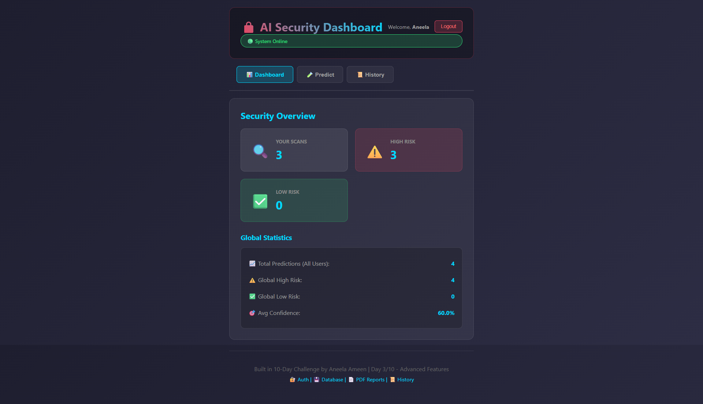
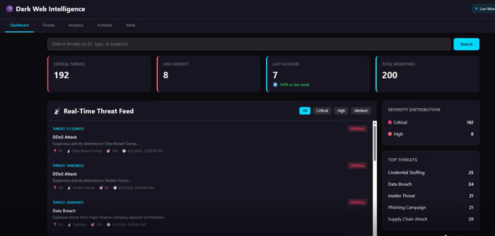
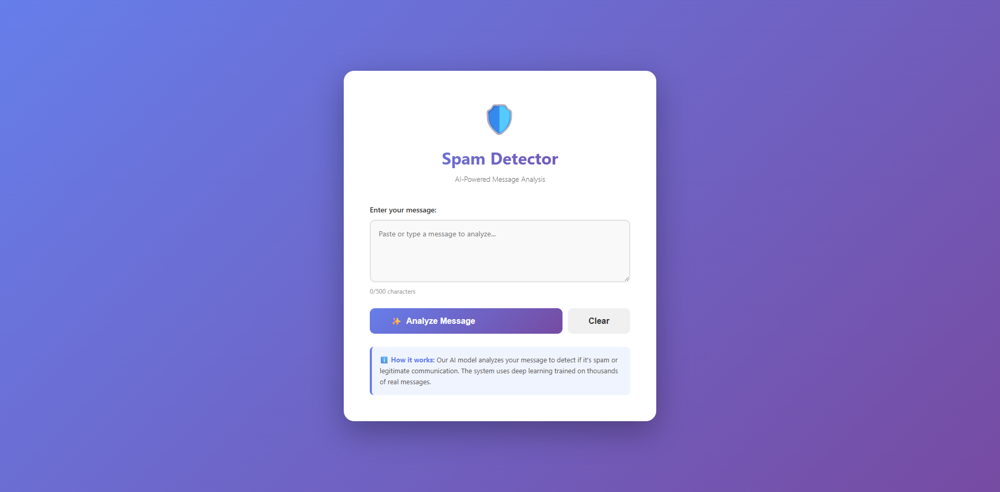

Building a Unified AI-Powered Threat Defense System
Most cybersecurity solutions are fragmented — different tools for different problems.
A complete AI-powered cybersecurity ecosystem
👉 It combines everything into a single security platform
Most cybersecurity solutions are fragmented — different tools for different problems.

Phishing remains one of the most dangerous cyber threats — often targeting users directly through deceptive links.

Cybersecurity tools generate massive amounts of data — but raw data alone is useless.

The dark web has become a central hub for cybercriminal activity — from stolen credentials to zero-day exploits.

Spam messages are more than just annoying — they are often the entry point for phishing, fraud, and malware attacks.

Distributed Denial of Service (DDoS) attacks are one of the most disruptive cyber threats — capable of taking down entire systems by overwhelming them with massive traffic.